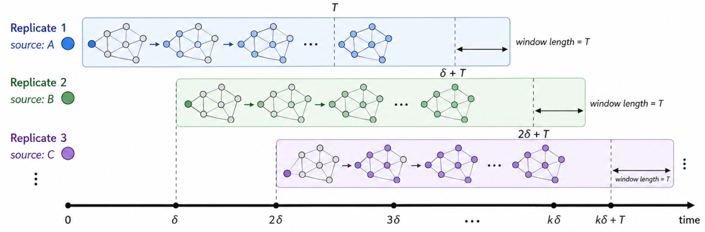
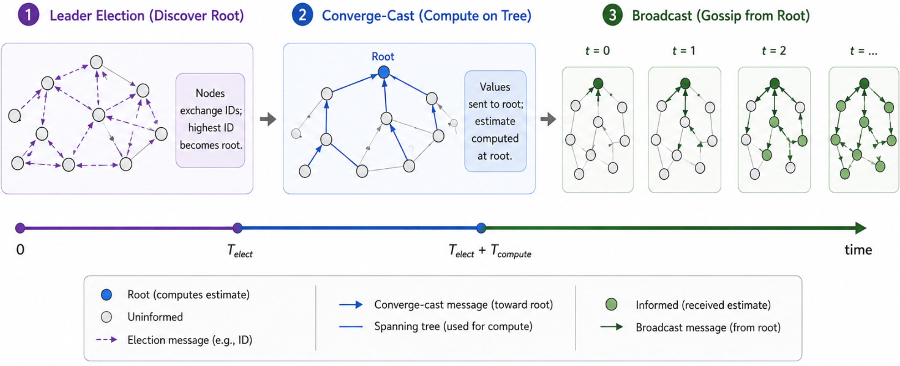
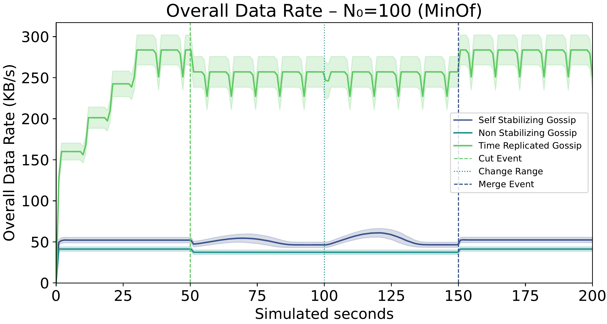

A Self-Stabilizing Min-Max Consensus via Path-loop Detection
Context: gossip algorithms
Gossip algorithms are a popular class of decentralized protocols for information dissemination and aggregation in distributed systems.
Network nodes converge to a common value by repeatedly exchanging and merging their local state with neighbors.
Gossip algorithms merge values using functions that are:
- idempotent: $f(x, f(x, y)) = f(x, y)$, and
- commutative: $f(x, y) = f(y, x)$.
Problem at hand
- Gossip is scalable and decentralized, but monotonic
- values can only adjust in one direction
- Once a stale or corrupted “best” value appears, it can persist forever
- Gossip protocols are inherently asymmetric
- In other words, classic gossip is not self-stabilizing (cf. Dijkstra 1974¹)
Self-stabilization is the ability of a system to recover from arbitrary transient faults, eventually converging to a correct state without external intervention.
1. Self-stabilizing systems in spite of distributed control https://dl.acm.org/doi/10.1145/361179.361202
Gossip algorithms: the curse of monotonicity
Mini-simulation: find the minimum value in the (local) network.
We’ll expand the communication radius, then reduce it
Desiderata: the minimum value should be found, when the network changes, the system should recover and find the new minimum.
Common workarounds
Restart-gossip
A strategy to recover from stale values is to periodically reset the system
- Requires global synchronization or logical timestamps
- Stability vs adaptivity trade-off (oscillatory behavior)
- Non-self-stabilizing by design
Time-replication

Maintain multiple parallel gossip instances, use the oldest replica as current, discard replicas after a timeout.
- Requires a “pace-making” mechanism
- Trades off promptness and communication overhead to achieve self-stabilization
- Requires fine-tuning of hyperparameters (number of replicas, timeout duration)
Converge-cast + broadcast

Elect a leader, build a spanning tree, aggregate values up to the root, broadcast result down.
- Leader election and tree maintenance are costly and fragile in dynamic networks
Gossip vs. min-max consensus (aka selector-based consensus)
Min-max consensus is a special case of gossip where the correct value depends on a single input, e.g., minimum or maximum selection.
In addition to commutativity and idempotence, the function must also be selective: $f(x, y) \in \{x, y\}$.
Intuition
- In min-max consensus, the “best” value is determined by a single node’s input
- We can track the “path” of support for a value
- This is similar to the spanning tree in converge-cast, but without a fixed leader or global structure
- If the local device appears in the path of a candidate value, it can reject it as stale (loop detection)
Algorithm:
- messages are in the form
(value, list of device ids). Start with (local value, [local device id])
- observe the values shared by neighbors, discard all those whose list contains your device id (loop detection)
- select the best value among the remaining candidates and your local one
- tie-breaking by shortest path and deterministic ID-based rule
- share the selected value with your device id appended to the list
Why stale values disappear
- Unsupported values are not regenerated by any local source
- Propagation in finite components eventually causes loops or loss against valid candidates
- Loop detection + deterministic selection prunes obsolete information
Implementation in aggregate computing
- Fully decentralized
- No global clocks
- No periodic global reset
- No leader election or collection tree
- Asynchronous and local interactions only
Self-stabilization proof
We prove self-stabilization after the environment stabilizes.
- Each connected component contains a finite set of devices $\mathcal D$
- Device identifiers are totally ordered
- Each device keeps only the last value received from each neighbor
- Local inputs and neighborhood relations eventually stop changing
Proof idea
- We show that the aggregate computing implementation of algorithm is an instance of the minimizing-share self-stabilizing pattern
- Total order on device identifiers induces a total order on gossip values
- The addition of the current device identifier to the path ensures monotonicity and progressiveness
Consequences
- Loop-freedom: a candidate cannot be accepted after re-entering a device already in its path
- holds because a device never selects a candidate whose path already contains its own identifier
- Stale information pruning: unsupported candidates are eventually removed
- holds because, once stabilized, unsupported candidates are no longer regenerated locally, while progressive path extension cannot continue indefinitely in a finite component without eventually being rejected by the sanitizer.
- Convergence: remaining candidates converge to the best value in each connected component
- holds because the minimizing-share result guarantees stabilization to the ≤-minimum candidate
Evaluation setup
- Simulated in Alchemist¹, experiments are open source and available²
- Random 2D deployments in a square arena, asynchronous rounds (1 Hz), unit-disk communication with range $R$
- Dynamics: We let the system stabilize, then perturb it by changing the topology (inducing segmentation), then changing the local values, and finally removing the segmentation.
- Baselines: non-self-stabilizing gossip and time-replicated gossip
- Metrics:
- RMSE from oracle expected value
- Communication data rate
1. https://alchemistsimulator.github.io
2. https://bit.ly/3OnjCQA
Network cost

Conclusion
- We presented a self-stabilizing min-max consensus algorithm based on path-loop detection
- The algorithm is fully decentralized, asynchronous, and does not require global synchronization or leader election
- We proved self-stabilization
- We compared with time-replicated gossip and showed comparable convergence speed with significantly lower communication overhead
Limitations
- Designed for selector-based consensus (min/max/custom comparator), the approach is not suitable for mean/union-style aggregates
- We suspect that high churn rates may degrade performance, but we have not yet tested this hypothesis
Future work
- Characterize performance in cases of persistent churn, message losses, and heterogeneous delays
- Investigate path-loop detection for other algorithms
Memory cost
The path $P$ is the only additional state carried by the protocol.
- Worst case: $|P|$ grows linearly with the network diameter
- Internet-like router-level diameters are typically in the order of tens: 10–40 hops
- With 16-byte UUID identifiers: 160–640 bytes per path
- With 6-byte MAC-style identifiers: 60–240 bytes per path
The overhead remains manageable for most modern networked devices.